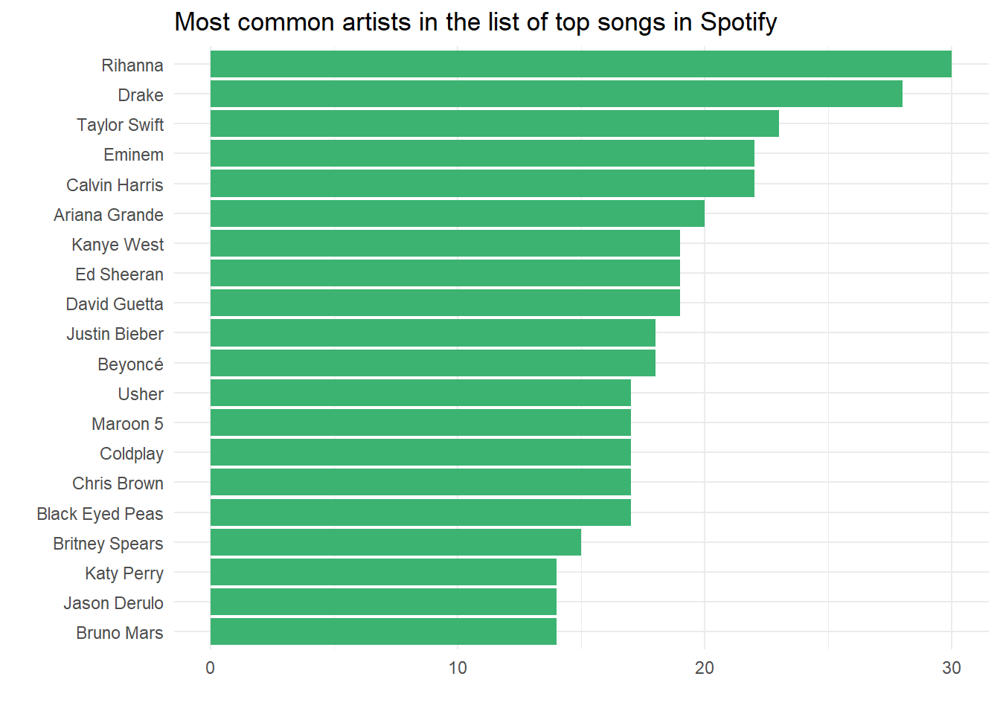
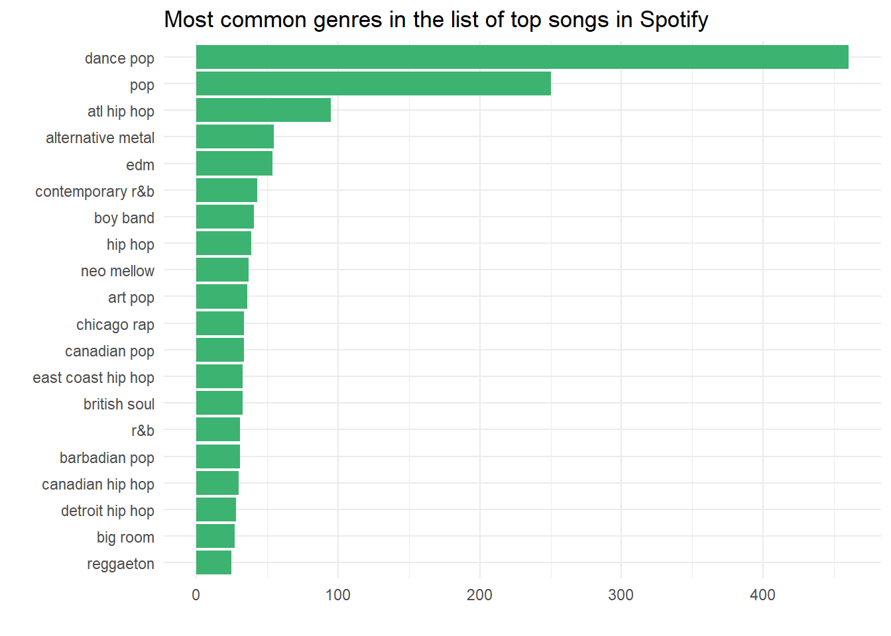
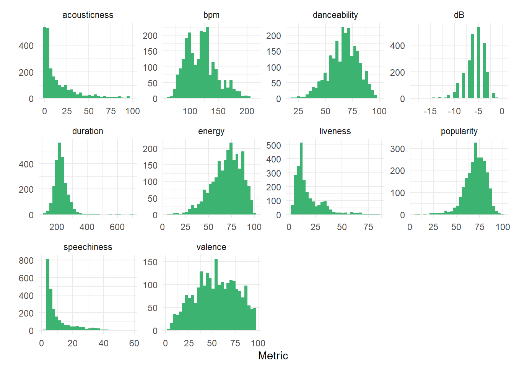

# Load relevant packages
library(tidyverse)
library(skimr)
library(corrplot)
# Set minimalistic theme
theme_set(theme_minimal())Exploratory Data Analysis
Introduction to data
Description of data
We will be analyzing the top 100 songs on Spotify every year, from 2000 - 2023.
The dataset was taken from Kaggle. The data was extracted by Conor Van Eden using Organize Your Music. More details here.
No private information is being used: everything is public information. Furthermore, not much preprocessing was done (or explained) on the data.
Glimpse of data
Let’s take a look at the dataset using skim.
songs <- read_delim("data/Best Songs on Spotify from 2000-2023.csv",
delim = ";", escape_double = FALSE, trim_ws = TRUE)
skim(songs)| Name | songs |
| Number of rows | 2385 |
| Number of columns | 14 |
| _______________________ | |
| Column type frequency: | |
| character | 3 |
| numeric | 11 |
| ________________________ | |
| Group variables | None |
Variable type: character
| skim_variable | n_missing | complete_rate | min | max | empty | n_unique | whitespace |
|---|---|---|---|---|---|---|---|
| title | 0 | 1 | 1 | 99 | 0 | 2261 | 0 |
| artist | 0 | 1 | 2 | 41 | 0 | 1014 | 0 |
| top genre | 0 | 1 | 3 | 27 | 0 | 266 | 0 |
Variable type: numeric
| skim_variable | n_missing | complete_rate | mean | sd | p0 | p25 | p50 | p75 | p100 | hist |
|---|---|---|---|---|---|---|---|---|---|---|
| year | 0 | 1 | 2011.12 | 6.75 | 1985 | 2005 | 2011 | 2017 | 2023 | ▁▁▆▇▇ |
| bpm | 0 | 1 | 119.78 | 27.27 | 60 | 98 | 120 | 134 | 211 | ▂▇▇▂▁ |
| energy | 0 | 1 | 69.79 | 16.16 | 6 | 59 | 71 | 82 | 100 | ▁▁▅▇▅ |
| danceability | 0 | 1 | 67.03 | 13.72 | 18 | 59 | 68 | 77 | 98 | ▁▂▆▇▂ |
| dB | 0 | 1 | -5.77 | 2.07 | -18 | -7 | -5 | -4 | 0 | ▁▁▂▇▁ |
| liveness | 0 | 1 | 17.79 | 13.63 | 2 | 9 | 12 | 23 | 84 | ▇▂▁▁▁ |
| valence | 0 | 1 | 54.23 | 22.46 | 4 | 37 | 54 | 73 | 97 | ▃▆▇▇▅ |
| duration | 0 | 1 | 225.95 | 43.23 | 115 | 200 | 221 | 246 | 688 | ▇▆▁▁▁ |
| acousticness | 0 | 1 | 15.61 | 20.28 | 0 | 2 | 7 | 22 | 98 | ▇▂▁▁▁ |
| speechiness | 0 | 1 | 10.11 | 9.52 | 2 | 4 | 6 | 12 | 58 | ▇▁▁▁▁ |
| popularity | 0 | 1 | 70.53 | 11.42 | 5 | 64 | 72 | 79 | 98 | ▁▁▂▇▃ |
We see that we have data on 14 variables: three are character-type and 11 are numeric-type. We have access to some basic information about the songs, including artist, release year, and genre, as well as some metrics, including danceability and speechiness.
Exploratory data analysis
TL;DR
Frequency of artist appearance
top_artists <- songs %>%
group_by(artist) %>%
count() %>%
arrange(desc(n)) %>%
head(20)
top_artists %>%
ggplot(aes(y = fct_reorder(artist, n), x = n)) +
geom_bar(stat = "identity", fill = "mediumseagreen") +
labs(
title = "Most common artists in the list of top songs in Spotify",
y = "",
x = ""
) +
theme_minimal()
We see that Rihanna, Drake, and Taylor Swift are the three artists with the most mentions. Here, a mention refers to having a song categorized as “top” on Spotify in the 2003-2023 period. It is important to note that one song can be mentioned as “top” multiple times. As seen below, Rihanna’s Diamonds and Taylor Swift’s I Knew You Were Trouble were made it to the list of top songs twice.
songs %>%
filter(artist %in% c("Rihanna", "Drake", "Taylor Swift")) %>%
group_by(artist, title) %>%
count() %>%
arrange(desc(n)) %>%
head()# A tibble: 6 × 3
# Groups: artist, title [6]
artist title n
<chr> <chr> <int>
1 Rihanna Diamonds 2
2 Rihanna Only Girl (In The World) 2
3 Rihanna S&M 2
4 Rihanna Stay 2
5 Taylor Swift I Knew You Were Trouble. 2
6 Taylor Swift Love Story (Taylor’s Version) 2Top song genres
songs %>%
group_by(`top genre`) %>%
count() %>%
arrange(desc(n)) %>%
head(20) %>%
ggplot(aes(y = fct_reorder(`top genre`, n), x = n)) +
geom_bar(stat = "identity", fill = "mediumseagreen") +
labs(
title = "Most common genres in the list of top songs in Spotify",
y = "",
x = ""
) +
theme_minimal()
We see that “dance pop” and “pop” are the two most common genres within top songs by a large margin. It might be intersting to see what kind of variations exist withing these two genres when it comes to other song metrics like danceability and valence.
Most common words in song titles
songs %>%
select(title) %>%
separate_rows(title, sep = " ") %>%
unnest(title) %>%
mutate(title = str_remove_all(title, "[[:punct:]]")) %>%
filter(title != "") %>%
mutate(title = tolower(title)) %>%
group_by(title) %>%
count() %>%
arrange(desc(n)) %>%
head(30) %>%
ggplot(aes(y = fct_reorder(title, n), x = n)) +
geom_bar(stat = "identity", fill = "mediumseagreen") +
labs(
x = "",
y = "Word",
title = "Most common words found in song titles"
)We see that the word “feat” is very common - we love to see collaboration! Furthermore, we also see that the word “you,” “me,” and “love” are pretty common. It might be interesting to analyze this further.
Distribution of year
songs %>%
ggplot(aes(x = year)) +
geom_histogram(fill = "mediumseagreen") +
theme_minimal()We see that there is a somewhat symmetric distribution when it comes to the release years of top songs. However, we see some “spikes” around 2004, 2007, 2011, and 2016. It might be interesting to dive deeper to see reasons for these “spikes.”
Distribution of song metrics
songs %>%
select(title, bpm, energy, danceability, dB, liveness, valence, duration, acousticness, speechiness, popularity) %>%
pivot_longer(
cols = -title,
names_to = "metric",
values_to = "value"
) %>%
ggplot(aes(x = value)) +
geom_histogram(fill = "mediumseagreen") +
facet_wrap(vars(metric), scales = "free") +
labs(
x = "Metric",
y = ""
)
Some observations:
acousticnessdemonstrates a heavily right-skewed distribution.durationis centered at around 220 seconds, which means most songs are around the 3-4 minutes range.danceabilityshowcases a symmetric distribution centred at score 70.
songs %>% select(year, bpm, energy,
danceability, dB, liveness,
valence, duration, acousticness,
speechiness, popularity) %>%
cor() %>%
corrplot()Data limitations
Our dataset provides a lot of information on each song, but there are certain limitations.
- There is no indication of which year a song is “top” for. Below, we see the song “Sorry” is appears five times in our dataset. But, what years were these in? 2005? 2010?
songs %>%
group_by(title) %>%
count() %>%
arrange(desc(n)) %>%
head(3)# A tibble: 3 × 2
# Groups: title [3]
title n
<chr> <int>
1 Sorry 5
2 Beautiful 3
3 Burn 3- We do not have access to the song lyrics. If we did, we could so some text analysis to determine correlations between lyrics and popularity.